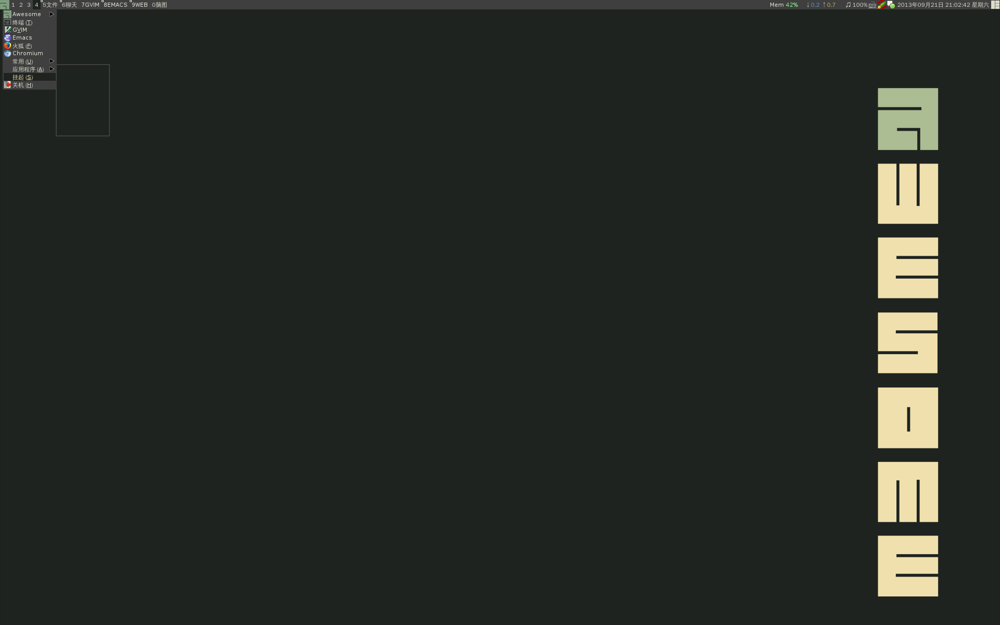

Conversation with 81184027 at Sat 21 Sep 2013 02:43:13 PM CST on 154115835 (webqq)
(02:30:31 PM) 2506282283: 弟兄姊妹主爱同在！
9月21日，2013年的第264天。神带领我们今天的灵程。
愿我们收获活水吗哪，发出对神的感谢赞美。
旧约 传道书 5：8-6:
新约 加拉太 3：
有代祷事宜请告知
(02:34:42 PM) 咨询师-泪: 0.0
(02:30:31 PM) pastorqi: 弟兄姊妹主爱同在！
9月21日，2013年的第264天。神带领我们今天的灵程。
愿我们收获活水吗哪，发出对神的感谢赞美。
旧约 传道书 5：8-6:
新约 加拉太 3：
有代祷事宜请告知
(02:34:42 PM) 咨询师-泪: 0.0
(04:42:00 PM) 不执着: 以下希望对您有帮助：
(1)逆境和挫折是塑造人类美好心灵的基石!
(2)逆境和挫折正好是您接受磨练和挑战的极好机会!也是您升华和超越自我的极好机会!
(3)每种创伤都是一种成熟,逆境是成长的必经过程,也是走向进步和成功的动力!能勇于接受逆境的人生命就会日渐茁壮!
(4)逆境和挫折有些是在消你的罪业,所以要用积极,乐观的态度去接受它!
(5)一生中没有受到逆境和挫折的人反而不能觉醒!
(6)忍人所不能忍的气，吃人所不能吃的苦！大逆境有大成就,逆境可以成就伟人!肚量一定要大，心胸一定要无限宽广无边！
(7)天生我才必有用,天将大任于你先必用逆境来磨难你!上帝在送给你礼物前他会用困难加以包装！
(8)处困境时要能看到有利的一面,处烦恼时要能看到解脱的一面,处绝望时要能看到希望和光明的一面！所以要从多层次,多角度辩证的、全面的看待问题!
(9)有时面对困境不要一味回避它,试着勇敢地面对它,你就会发现其实没什么大不了的,喜悦将会由此到来！越想逃避逆境越失败，将永远没有超越的机会！
(10)逆境是生灭无常的,它会随时间而改变,转化,和消失!
(11)人生不如意十有八九,人人都有不如意,家家有本难念的经.想想世上比自己不幸的人多得数不清!知足常乐,从历史和现在一对比,其实我们每个人都生活在天堂里!人类的大不幸是生在福中不知福！
(12)其实所谓的逆境只在于一心,只是个观念而已,凡事已经发生了，就看你用什么心和观念去看待，其结果天地的差别！！！
(13)天鼎地炉，人居其中，本来就要受磨练！玉不琢不成器，金不炼不值钱，参天的大树正是经过无数的风风雨雨而成长起来的！人就是要在挫折和磨难中成长壮大自己！
(14)处逆境学会沉着、冷静、理性、不焦不燥、既来之则安之!学会能屈伸,知进退,以善心和柔心化解之,以自然的平常心应对之,以空性的智慧看破之!趁机好好修身养性，努力锻炼身体，训练自己内心强大和心理素质提高，咬紧牙关学习，以丝毫不伤害自己的心为原则，留得青山在，不怕没柴烧！蓄势总可以待发啊！
(15)再大的逆境总会过去，回过头来一想,过去的逆境中所产生的所有烦恼，所有情绪上的变化,所有的执着其实都是多余的,其实都是一场空!还不如以平静的心，冷静平常心,大无畏的乐观主义精神应对来得好!伤害了自己的心才是最花不来的！！！现在赶快觉醒吧，省得将来后悔莫及。
(16)逆境是智者走向成功和进步的台阶，对愚者则成为极大的障碍！遇顺境处之淡然，遇逆境处之泰然，风平浪静，训练不出良好的水手。
(17)逆境一时不能转变,但心是完全可以转的,就看你怎么去看待和对待，一切全在于心！
(18)你放下一分执着就获得一分超越,升华,和解脱!
(19)感谢给你制造逆境的人,因为他造了恶业而带给你升华的好机会!他是在成就你的道业。
（20）痛苦不是灾害，而是人类耕种的田！一切众生要在痛苦中学习，在痛苦中站起来，因为它会让你得到很多的收获！
（21）世上无数的残疾人，人残志不残，创造出无数难以想象的人间奇迹！活得非常精彩有价值！而很多四肢发达，头脑聪明的人却活得痛不欲生！？
(22)每个人的潜能,潜力,精力其实大得无边!每个人的对外界所受打击的心理承受能力也是大得没有边!而且每个人对环境的适应能力也是非常强大的!每个人潜在的智力能力也是大得无边的!这是每个人都完全具备的宝贵资源财富!这是从古到今在无数人身上已经得到充分证明了的!努力发掘出来!人人都有可能创造出奇迹!对自己永远不要失去信心!永远不要小看和否定自己！
(23)有突破困境的决定,才能获得良机.有接受失败的勇气,才能获得成功.在委屈中学习经验,在困难中接受挑战,在失败中累积智慧,在挫折中锻炼意志!
(24)其实人类的能力、智慧、精神和意志力是足足可以战胜任何逆境和挫折的无数倍不止！所以不要怕逆境，接受挑战一切逆境和磨难！人的身体甚至于可以被摧毁,但意志绝不可以被打败!
(25)吃苦了苦,苦尽甘来,享福了福,福尽悲来!吃亏是福，占别人便宜是祸！
(26)苦是诸佛菩萨最赞叹和最乐于接受的良师益友!以苦为乐,则苦自消.其实苦乐全在于一心一念而已,只是个观念而已!
(27)跌倒的人先不要白白的站起来,为的是今后不再被跌倒!
（28）战胜百万大军的人不算伟大，能战胜自我的人才算是真的伟大！
（29）顺境逆境、善恶、是非、有无、大小、长短、苦乐、对错、高低等本就是相对立而存在，是矛盾绝对不可分割的两个方面啊！如果一方不存在，则另一方也不存在了！甚至世界也不存在啦，所以要辩证一分为二的看待所有问题才是圆满的人生啊！因此顺境逆境都要以积极、乐观、平常心去看待才是正确的心态！
（30）无论在任何情况下，面对再痛苦的事和环境也绝不能悲观失望甚至绝望！其实世上根本就没有能让你绝望的境，只有你面对一切境的心！有时一念就能让你站起来，让你永远振作起来！就看你观念能否转过来！心是一种无比强大的能量！能让一个巨人崩溃倒下，也能让一个弱小者永远站立起来成为一个巨人！但看你如何用心，一切就是个心字，多给自己正能量吧！
（31）化一切逆境为积极，为强大动力，而绝对不能消极！人的精神力量强大无边，培养一种大无畏的气魄，压倒一切的精神力量！
(32)培养一种接受一切的挑战精神！培养一种大无畏的乐观主义精神，跟一切艰难险困苦逆境斗，其乐无穷！
(06:16:21 PM) 咨询师-泪: 0.0
(08:59:04 PM) 江南水乡: 大家好
(08:59:37 PM) 江南水乡: 今晚的话题是什么呢
(09:00:33 PM) 江南水乡: 我想讨论失恋的话题
(09:01:35 PM) 佳明: 讲
(09:02:38 PM) 江南水乡: 我个人觉得失恋不是坏事
(09:03:00 PM) 佳明: 恋爱是什么
(09:03:15 PM) 江南水乡: 让人成长，对认清自己与对方都是有益的
(09:03:56 PM) 江南水乡: 这要说到男人与女人的关系了
(09:04:14 PM) 江南水乡: 异性吸引
(09:04:20 PM) 光: 
(09:04:40 PM) 光: 搞了一个简洁的系统
(09:05:20 PM) 光: 失恋就是没有找到合适的系统了
(09:05:28 PM) 光: 再找就是了
(09:05:50 PM) 佳明: +1
(09:06:05 PM) 江南水乡: 呵呵呵
(09:06:09 PM) 紫馨-山东: 额
(09:06:19 PM) 江南水乡: 狗简洁
(09:06:21 PM) 佳明: 只不过以前的操作系统习惯了
(09:06:22 PM) 江南水乡: 够
(09:06:32 PM) 江南水乡: 可以改变吧
(09:06:42 PM) 佳明: 所以 失恋自然不习惯
(09:06:51 PM) 江南水乡: 我都重装三系统了
(09:07:03 PM) 江南水乡: 有些东西还是从新下
(09:07:30 PM) 江南水乡: 但是还是xp的
(09:07:43 PM) 佳明: 那就放弃电脑呗
(09:07:48 PM) 江南水乡: 根源还是需要女人
(09:08:02 PM) 佳明: 换个生活态度
(09:09:07 PM) 江南水乡: 也可以说换一种活法吧
(09:09:32 PM) 大海: 是吗
(09:10:16 PM) 艾文博晶: 恩
(09:10:20 PM) 江南水乡: 有些人是失败后才知道珍惜，有些看淡出家，如王菲
(09:10:35 PM) 佳明: 这种事情还是不要看的太理性
(09:10:38 PM) иЙ: 有在河南火车站得吗
(09:10:53 PM) 江南水乡: 这头像恐怖
(09:10:57 PM) 佳明: 河南有很多火车站
(09:11:25 PM) 江南水乡: 郑州火车站我被一家商店给黑过
(09:11:49 PM) 佳明: 这算是地域黑吗
(09:11:54 PM) 江南水乡: 买到假烟
(09:12:03 PM) 大海: 都有这种现象
(09:12:05 PM) 江南水乡: 为什么要做假
(09:12:18 PM) 江南水乡: 利益驱使
(09:12:28 PM) 大海: 也许吧
(09:12:37 PM) 江南水乡: 后来打工商维护
(09:12:51 PM) 江南水乡: 工商没来，自动换烟
(09:13:14 PM) 江南水乡: 而且还是小姑娘卖烟
(09:13:20 PM) 江南水乡: 想不到
(09:13:37 PM) иЙ: ，，，，，
(09:13:55 PM) 江南水乡: 就是郑州火车站出站口卖特产的那家
(09:14:09 PM) 江南水乡: 以后在那买东西要留意
(09:15:11 PM) 艾文博晶: 恩 其他骗的方式也有
(09:15:37 PM) 江南水乡: 我受骗经历基本在火车站
(09:16:04 PM) 江南水乡: 武汉一次，今年在岳阳一次
(09:16:38 PM) 江南水乡: 武汉买手机，自己贪心，怪自己
(09:17:13 PM) 江南水乡: 跟大家讲讲我在岳阳被骗经历吧
(09:20:50 PM) 江南水乡: 晚九点多，出岳阳火车站，天黑走路碰到一个男人用钥匙掏耳朵，我不小心碰了他下然后就出血了，其实那血就是手上流的，非说是耳朵，我看他就是骗人的而自己就赶时间给了那人二百，
(09:20:59 PM) 心成长-辽宁: 心理咨询就是解决人的教育和发展的问题！
(09:21:26 PM) 江南水乡: 我对岳阳有这等人惊奇
(09:22:06 PM) 江南水乡: 对岳阳城市印象更打折扣，
(09:25:45 PM) 艾文博晶: 恩 可能每个地方都有 医托也会集中在人流多的地方
(09:27:46 PM) 江南水乡: 一个城市的人素质代表城市
(09:28:26 PM) 江南水乡: 我同学去厦门提了个包，坐公车，老人给他让座
(09:29:23 PM) 江南水乡: 中国的火车站真是鱼目混杂之地